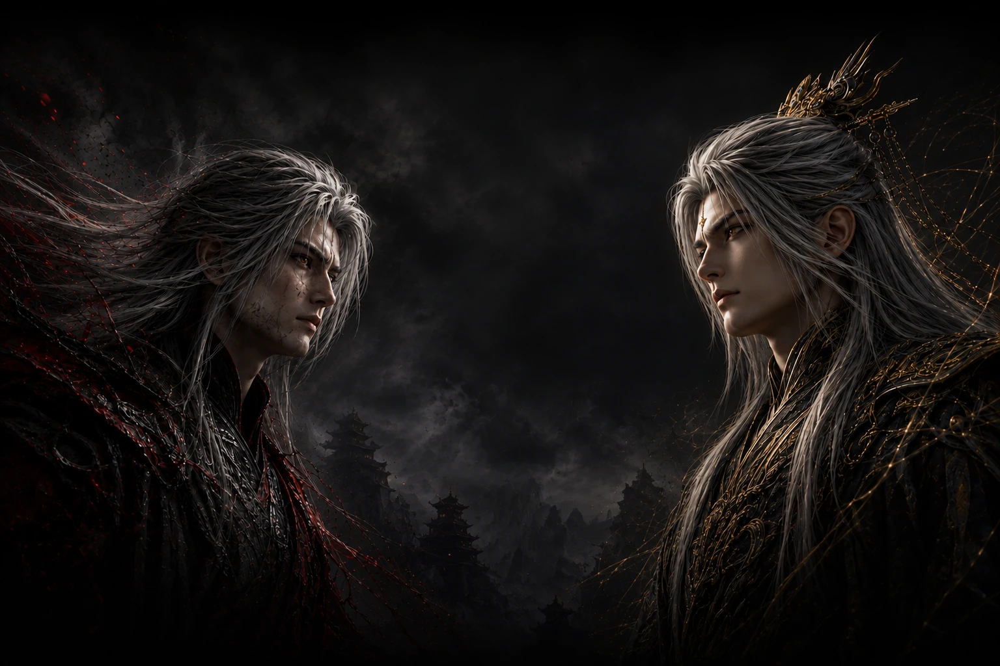
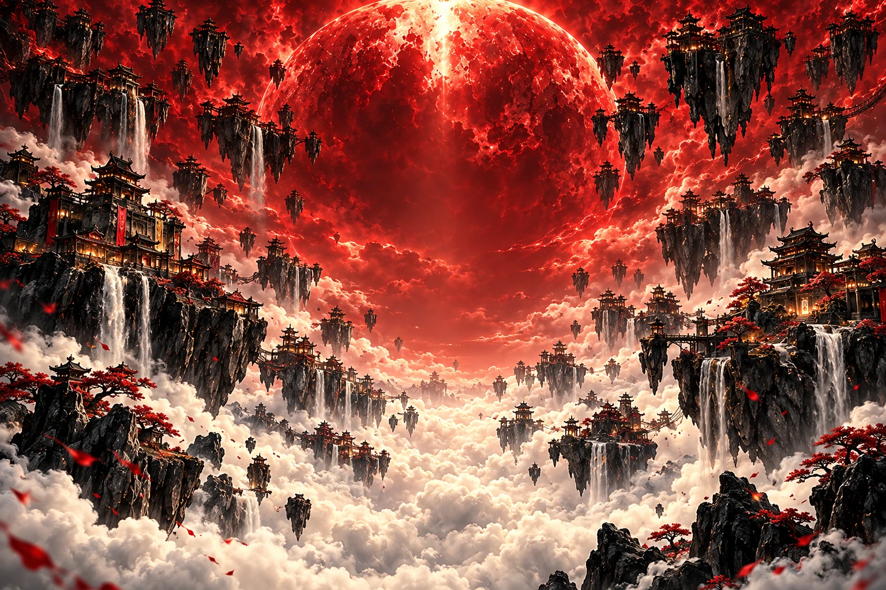
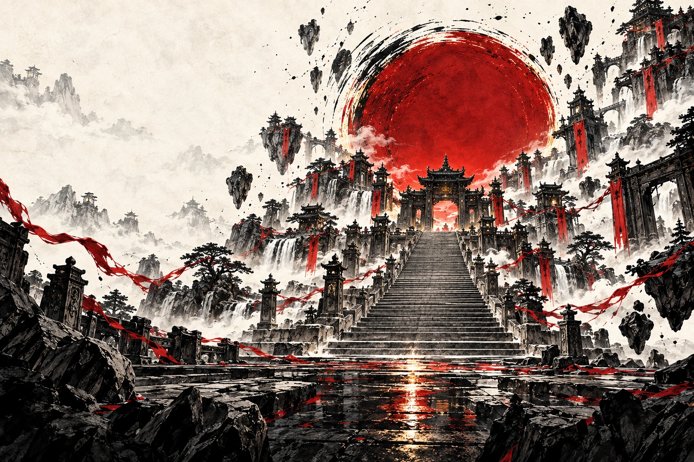

Heaven Defying
An extinct bloodline. A forbidden mentor. Your village was ordered to burn; now the blood they hunted becomes the power that will defy them.
WUHEN & XUAN · A DARK XIANXIA EPIC
Scroll to cross the threshold
Opening the threshold.

An extinct bloodline. A forbidden mentor. Your village was ordered to burn; now the blood they hunted becomes the power that will defy them.

He offers a path beyond mortality. You offer him a way back.

YOUR FIRST STEP INTO THE UNKNOWN
The prologue is in development: a roughly 20-minute journey from the village ruins to your first awakening.
Get notified when it’s readyBEFORE YOU BEGIN
A dark xianxia cultivation action-RPG. Survive a village massacre, unlock your hidden bloodline, and uncover the political conspiracy behind the attack.
PC (Windows) first, with Steam planned. Other platforms may be considered after the PC release.
The roughly 20-minute vertical slice is in development. There is no release date yet. Use the notification link to hear when it is ready.
The interactive prologue tells the planned demo story through concept art. It contains story spoilers and is not a playable demo or gameplay footage.
Email zhekov.yane123@gmail.com with the subject “Notify me” to request a message when the demo is playable.